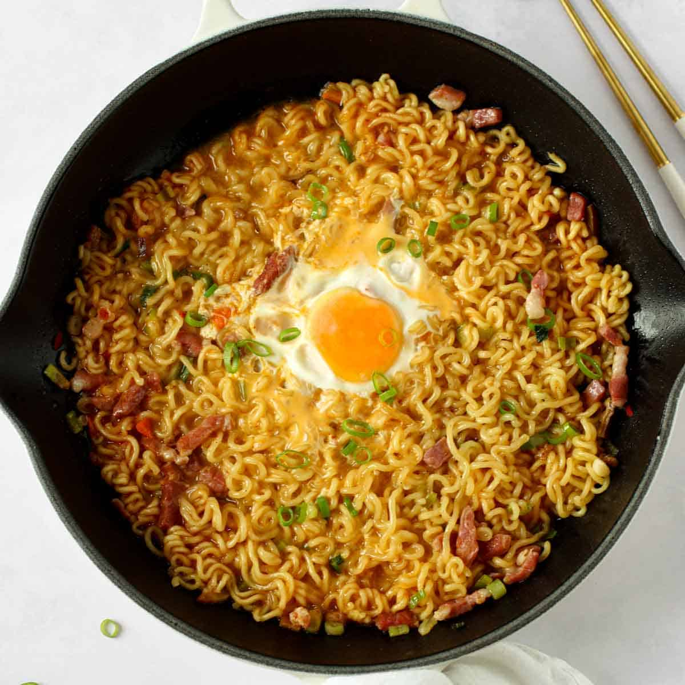

Shin Ramen

Description
Shin is a Korean brand of spicy instant ramen noodles. The dish is garnished with spring onions and an egg.
Ingredients
- 500ml water
- 1 packet of Shin ramen
- 1 egg
Steps
- Boil water in a pot.
- Add ramen and empty seasoning and dried vegetable packets to the water.
- Stir after 2 minutes.
- After another minute, crack egg into the pot and cover for 30 seconds.
- Serve immediately.
Home